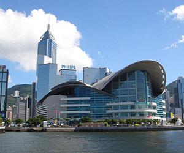

里昂位于法国东南部，历史悠久，在罗马时代就相当繁荣，1998年被联合国教科文组织列为世界人文遗产城市。里昂分为旧城和新城，旧城在索恩河右岸，罗纳河和索恩河从城中流过，河上架有20多座桥梁；老城区与古老的宗教历史颇有渊源，其中圣让首席大教堂已有近千年历史，兼具罗曼和哥特式风格，令人回味。全市共有21个博物馆，以美术博物馆、纺织博物馆（里昂曾为全欧洲最重要的丝绸产地）和装饰艺术博物馆最为著名，因此也有“文化城”之称。
法国东南部大城市，也是法国第三大城市。在索恩河同罗讷河汇合处。人口47.23万人，包括郊区约125.71万（2007）。位于从地中海通欧洲北部的战略走廊带上，罗马帝国之前已繁荣。长期为法国政治中心。十九世纪时多次工人起义在此爆发。商业中心。水陆交通枢纽。多中世纪建筑。有大学。每年在此举行国际博览会。游览业甚盛。里昂气候宜人，这里终年阳光明媚，交通、电信非常便捷。里昂有旧城和新城两个城区，旧城在索恩河右岸，罗纳河和索恩河在城中蜿蜒流过。新市区在罗纳河左岸，为大学、政府机关和贵族住宅区所在地。里昂有“文化城”之称，全市共有21个博物馆，以美术博物馆、纺织博物馆和装饰艺术博物馆最为著名。
城市人口：1,270,000
种族混合：欧洲人、北非摩尔人、非洲人黑人
宗教信仰：罗马天主教、新教徒、犹太教、伊斯兰教
所处时区：gmt +1
平均温度：1月：3 ℃（ 37 华氏度 ） 7月：21 ℃ ( 70 华氏度）
年降雨量：826 毫米（ 33 英寸）
法国继巴黎之后人口最多的城市要数里昂了，它位于法国的东南部，是座历史悠久的古老城市，特别是1998年被联合国教科文组织列为世界人文遗产城市之后，它的地位就更加显著了。里昂旧城的最中心布满了中世纪的建筑和教堂，这就使它获得得了“拥有一颗粉红的心脏”之城的美称。近来年，里昂在工商、交通和科教等方面都有很大的发展，包括郊区在内，人口已达127万，成为法国仅次于巴黎的第二大都市区和经济文化中心，在国际上也享有越来越重要的地位。
现在，里昂仅次于巴黎，是法国第二大博览会中心，每年一度的国际博览会吸引三四十万人参观。在东南郊夏西厄的欧洲博览公园(eurexpo）里，可以看到展览面积达7万平方米的十几个主题展馆。法国本土和海外省及海外领地的参展单位数以千计，也有从南非到中国、从布基纳法索到匈牙利的外国官方参展团。在博览会上，人们可以看到从微波炉到水力按摩浴缸等各种新式的产品，还可以品尝到不同的特色佳肴。对参展厂商来说，则是宣传自己的产品，谈判成交各种生意的好场所。每年4月中旬，里昂都要举行规模盛大的国际博览会（foire internationale），这个博览会的历史比里昂丝织业还要悠久。早在1420年，里昂就第一次摆开货摊，广招天下客商，进行交易。法王利用意大利的分裂，热情欢迎来自佛罗伦萨等地的流亡者——金融和商贸方面的行家。这样，里昂的博览会越办越红火，直到19世纪，繁荣依旧。

Copyright©2016-2017zuimeidechengshiliang.com,All Rights Reserved
冀ICP备05067795号 冀公网安备110402440008号